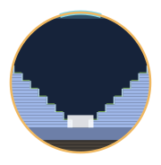
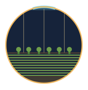
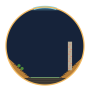
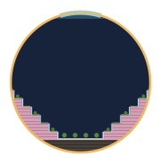
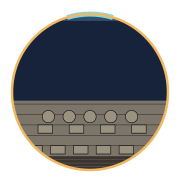
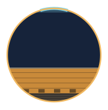
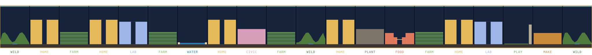

Each level is 3.33 m, so 45 levels fill the 150 m tube. "Down" is outward, so L1 sits on the hull.
Every cell is 180 m long and has its own L1–4 hardware base: air handlers, water and waste lines, coolant, power, the district train and a refuge floor.
Gravity varies only 0.9% between L1 and L45.
HOME · RESIDENCE
L5–30 terraced homes either side of a 40 m green canyon. Roof gardens on L31. ~3,600 residents.

LAB · RESEARCH
L5–8 heavy labs on the hull, L9–28 labs and offices, a clean-room core and a 20 m light well.

FARM · FARMING
9 growing tiers, 5 m each, up to L18, fed by light pipes. A deep-soil orchard tier on top under daylight. Feeds ~4,500.
WILD · GREAT OUTDOORS
Forested hills climb the walls to ~L18, around a river and trails. The hills are hollow, with storage and water tanks inside.
WATER · WATERFRONT
A 3 m-deep swimming lake, sand beaches, a diving tower and cliff-side cafés.
FOOD · FOOD AND NIGHT
Food halls, markets, bars, clubs and a concert plaza strung with lights. Terraces to L15.

PLAY · PARKS AND SPORTS
Fields and a running track, stands with gyms inside, and a 55 m climbing wall.

CIVIC · HEALTH AND LEARNING
Hospital, schools, university, town hall and a central plaza, to L20.

PLANT · HARDWARE SUPPORT
One per district, to L20: air revitalisation, water master plant, digesters, coolant pumps, power, spares, robot depot.

MAKE · INDUSTRY AND REPAIR
Heavy floors to L16: fabrication, 3D printing, robot repair, recycling smelters.
HUB · SPOKE JUNCTION
Elevators up the spoke to the hub, cargo docks and emergency command. 6 in the ring.
COLOURS
Dark band = hardware base
Cyan arc = window strip
Navy = open sky
Cross-sections to scale, 150 m tube.

Homes always sit next to a wild, water, food or play cell, so the great outdoors is a short walk from every front door. Each district runs its own plant.
| CELL TYPE | PER DISTRICT | RING TOTAL | SHARE | SUPPORTS |
|---|---|---|---|---|
| Residence | 5 | 150 | 25% | ~545,000 residents |
| Farming | 4 | 120 | 20% | Food for ~540,000, plus fermentation and aquaculture |
| Research | 2 | 60 | 10% | Labs; low-g labs up the spokes |
| Great outdoors | 3 | 90 | 15% | Leisure: 30% of the ring, ~32 km |
| Waterfront | 1 | 30 | 5% | |
| Food and night | 1 | 30 | 5% | |
| Parks and sports | 1 | 30 | 5% | |
| Civic, health, learning | 1 | 30 | 5% | Hospital, schools, university |
| Hardware plant | 1 | 30 | 5% | Life support for one district |
| Industry and repair | 1 | 30 | 5% | Making and fixing things |
| Spoke junction | — | 6 | 1% | Access to the hub |
POPULATION
≈550,000
About 7× the single-floor garden city, because homes stack 26 levels high. ~80 m² of home and shared space each.
WEIGHT
Stacked floors make the spinning tube about 4× heavier, ~870 t per metre. The basalt hoop bands grow from ~18 Mt to ~80 Mt. Still lunar material, but it's the cost of density.
GETTING AROUND
Trains in the base cap at ~70 km/h. Faster and riders feel ±10% heavier or lighter with direction; at 300 km/h it's 44% heavier going spinward. For long trips, ride a spoke up, cross the hub, ride down.
LOW GRAVITY
Gravity fades up the spokes: 0.5 g halfway, near zero at the hub. Space for low-g sports, rehab medicine and microgravity labs.
SAFETY
Pressure doors at every cell boundary turn the ring into 606 sealed compartments. Every base has a refuge floor with its own air and water.
ORDER-OF-MAGNITUDE ESTIMATES
SPECULATIVE CONCEPT